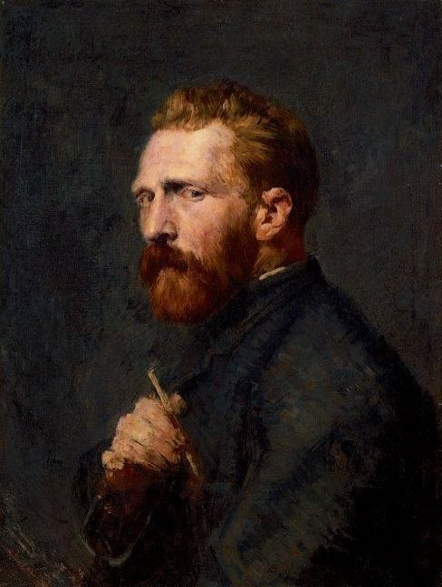
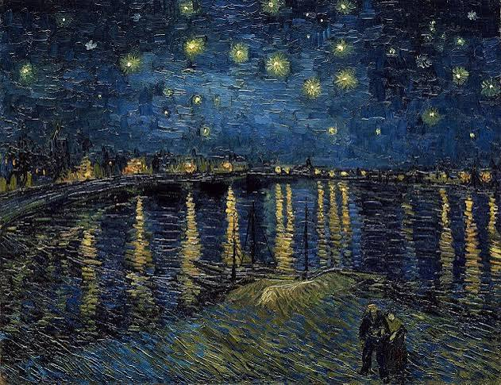
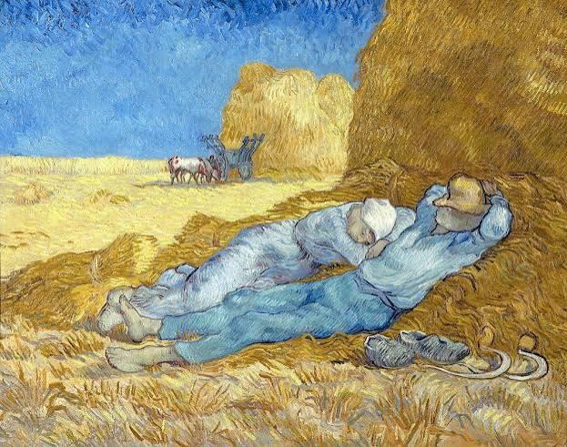
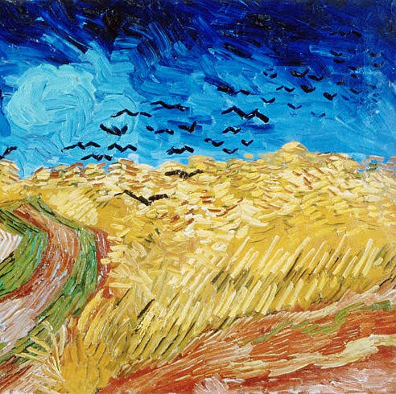
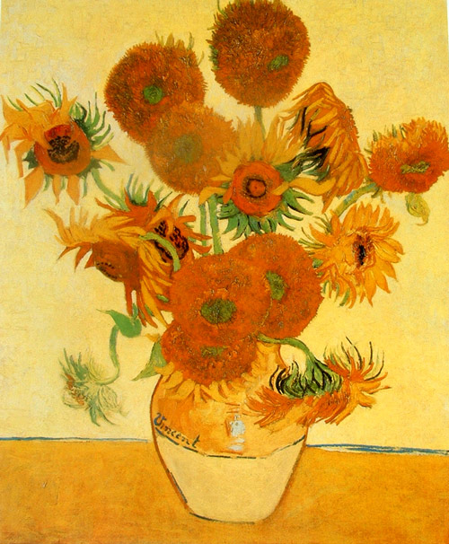
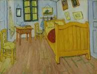

La noche estrellada (1889)
Pintada desde su ventana en el sanatorio de Saint-Rémy-de-Provence

Vincent van Gogh, figura emblemática del arte postimpresionista, es sin duda uno de los artistas más famosos y fascinantes de la historia. Sus obras vibrantes, atormentadas y emocionalmente intensas, junto con una vida marcada por el sufrimiento, han dejado una huella indeleble en el mundo del arte. Pero detrás de las pinceladas audaces y los remolinos de color, se esconde un hombre profundamente complejo, en busca de amor, reconocimiento y redención.
Nacimiento y juventud: un niño silencioso en un mundo en movimiento
Vincent Willem van Gogh nació el 30 de marzo de 1853 en Groot-Zundert, un pequeño pueblo del Brabante holandés. Era el hijo mayor del pastor calvinista Theodorus van Gogh y de Anna Cornelia Carbentus. Antes de su nacimiento ya había nacido el primer Vincent van Gogh, pero murió al nacer, un acontecimiento que perseguiría al artista durante toda su vida. Vincent creció en una familia piadosa, pero muy pronto se distinguió por su naturaleza solitaria y su carácter apasionado. Era introvertido, sensible y desde muy joven sintió una falta de comprensión del mundo que lo rodeaba.
De adolescente asistió a varias escuelas, pero nunca encontró su lugar en el rígido sistema escolar. Su amor por la naturaleza y los paisajes, que exploró en los campos de los alrededores de su pueblo, serían la primera fuente de inspiración para sus futuras obras.
Una vocación en evolución
Vincent no comenzó su carrera como pintor. Trabajó en la galería de arte Goupil & Cie de La Haya con la ayuda de su hermano Theo, que por entonces estaba en Londres y París. Sin embargo, disgustado por el mundo comercial del arte, dejó su trabajo en 1876. Después de un período de incertidumbre, Vincent consideró durante un tiempo seguir los pasos de su padre y convertirse en pastor. Se dedicó a la religión y se fue a Bélgica para predicar a los mineros de una región deprimida, el Borinage. Profundamente conmovido por la miseria humana que observó, vivió en condiciones similares a las de los mineros, compartiendo su sufrimiento.
Pero incluso en esta búsqueda religiosa, Vincent se sintió incomprendido y rechazado. Pronto fue despedido de su puesto de predicador, acusado de exagerar su celo. Se encontró entonces en una encrucijada, presa de una crisis existencial. Fue en ese momento cuando encontró refugio en el arte.










Por qué es tan estudiada: Es su obra maestra más icónica y un referente del postimpresionismo. Se estudia tanto por su composición emocional como por su precisión casi matemática en los patrones de turbulencia del aire.
Técnica y estilo: Óleo sobre lienzo. Destaca por el uso extremo del impasto y pinceladas largas, curvas y rítmicas.
Paleta: Azul cobalto, azul ultramar, amarillo indio y blanco de zinc.
Por qué es tan estudiada: Representa su dominio absoluto sobre el color monocromático y la luz.
Técnica y estilo: Óleo sobre lienzo. Logró profundidad y contraste utilizando casi exclusivamente distintos tonos de amarillo.
Paleta: Amarillo de cromo, ocre, naranja cálido y toques de verde malaquita.
Por qué es tan estudiada: Es clave para entender cómo usaba el color para transmitir emociones y su ruptura con la perspectiva tradicional.
Técnica y estilo: Óleo sobre lienzo con colores planos y contornos marcados influenciados por los grabados japoneses.
Paleta: Azul violeta, amarillo brillante, rojo bermellón y verde pálido.
Por qué es tan estudiada: Fue la primera obra en la que pintó un cielo estrellado al aire libre sin usar pintura negra.
Técnica y estilo: Óleo sobre lienzo. Uso magistral de colores complementarios (amarillo y azul frío).
Paleta: Amarillo de cromo, naranja, azul cobalto y azul de Prusia.
Por qué es tan estudiada: Obra de gran análisis psicológico y biográfico tras su crisis en Arlés.
Técnica y estilo: Óleo sobre lienzo con pinceladas cortas y direccionales en el rostro.
Paleta: Verde esmeralda, azul, amarillo ocre y tonos tierra.